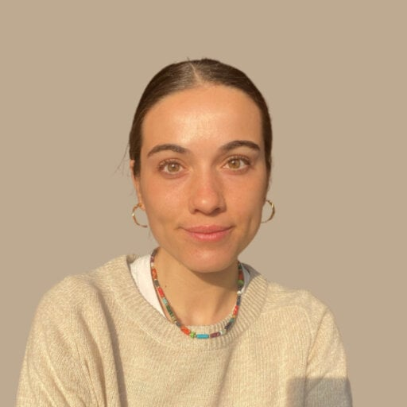

Soy investigadora en la Unidad de Investigación en Fisioterapia de la Universidad de Zaragoza (UNIZAR). Mi trabajo y mi investigación doctoral se centran en buscar las mejores estrategias de tratamiento conservador y fisioterapia para mejorar la calidad de vida de los pacientes.